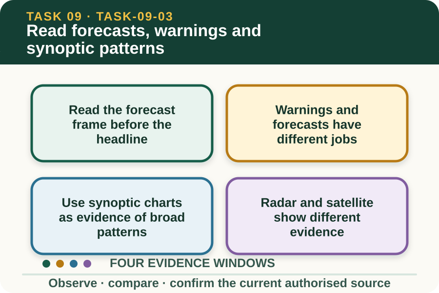
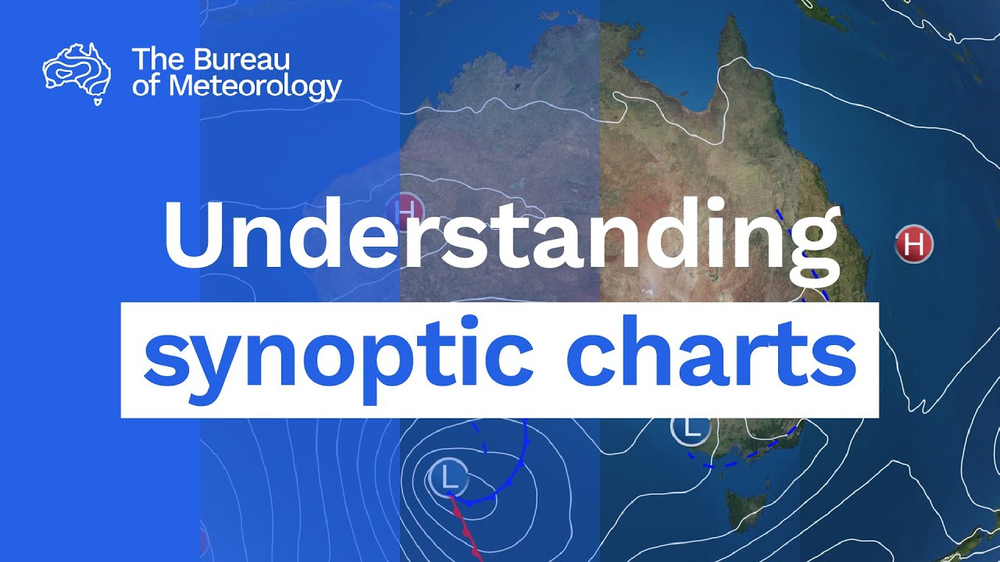

Learning purpose
Extract useful evidence from a current forecast, warning or synoptic chart without overclaiming certainty.
Task 9 · Lesson 3 of 4
Extract useful evidence from a current forecast, warning or synoptic chart without overclaiming certainty.
Learning purpose
Extract useful evidence from a current forecast, warning or synoptic chart without overclaiming certainty.
Success criteria
Learning boundary
Supplementary learning and formative practice only. Current RTO assessment, local procedures and authorised supervision control real work.

A forecast has a location, issue time, valid period and update cycle. Read these details before using a temperature range, rain chance, wind description or hazard statement, because a forecast for another district or day may be irrelevant.
Forecast language communicates likelihood, not certainty. A chance of rain does not mean every point will receive rain, and a forecast maximum does not state the temperature at every work area throughout the day.
A routine forecast describes expected conditions, while a warning identifies hazardous weather that may threaten life or property. The warning includes an affected area and timing that must be checked against the current workplace location and plan.
Do not paraphrase a warning so loosely that key limits disappear. Use the current Bureau wording and follow the workplace's authorised communication and contingency process.
A synoptic chart represents broad pressure systems and features such as highs, lows, fronts and isobars at a stated analysis time. These symbols help explain the larger weather pattern but do not provide a complete local forecast by themselves.
Closely spaced isobars can indicate a stronger pressure gradient, and fronts mark boundaries between air masses. Interpretation should be checked against the current forecast, observations and warnings rather than turned into a confident private prediction.
Weather radar can show recent precipitation patterns within its coverage and limitations, while satellite imagery can show cloud and other broad features. Neither image proves what will happen at one farm later in the day.
Check the image timestamp and animation sequence. A single saved frame can hide movement, weakening, gaps in coverage or the difference between cloud and rain at ground level.
Fictional worked example
Observed evidence: A fictional learning pack saved at 9:00 am on 3 November 2026 contains a district forecast valid for that day, a warning issued at 8:35 am for an adjacent area and three radar frames ending at 8:50 am. Decision and reason: Alex does not claim the warning applies to the farm or that the radar proves arrival time, because boundaries and movement must be checked. Safe action: Alex identifies the farm's district, issue times and valid periods and takes the exact uncertainty to the supervisor. Result: The supervisor checks the live Bureau service and applies the local contingency plan. Next check or record: Alex records the confirmed schedule change and the time of the live source used, not the saved class images.
Good interpretation identifies what the source supports, what remains uncertain and when an update is needed. This is more useful than either pretending certainty or refusing to plan at all.
Use conditional language such as if the current warning area expands or if observed wind changes, the supervisor will review the task. The actual trigger and response must come from the workplace plan, not from a student-created threshold.
A concise weather brief connects source evidence to the planned work: source and issue time, relevant condition, affected place and period, possible task exposure, next update and decision owner. Irrelevant detail can hide the factor that matters.
The worker reports anticipated impacts and seeks confirmation. They do not issue a private warning, overrule emergency advice or treat a learning-site answer as an authority to continue.

External media loads only after you choose it.
Source-linked video
Why watch: Read chart evidence while keeping uncertainty visible.
Watch for: What do the spacing and shape of isobars, pressure systems and fronts suggest without guaranteeing a local outcome?
Formative practice
Each option explains the consequence. These answers save only on this device.
Written application
Apply and keep a learning record
Mark the issue time, valid period, location, warning boundary, chart analysis time and next-update point on teacher-supplied saved examples. Write one evidence-based sentence and one limitation for each.
Learning record: A supplementary-learning source annotation that distinguishes what each weather product can and cannot support.
Lesson responses and the activity are formative learning only. Formal sufficiency and competence remain with the current RTO process.
Source basis: AHCWRK210 Release 1 requirements to check information, recognise change, anticipate work impact and access updates; NESA Weather focus-area interpretation; authorised teacher-posted weather notes. Live Bureau products and the workplace plan control real action.